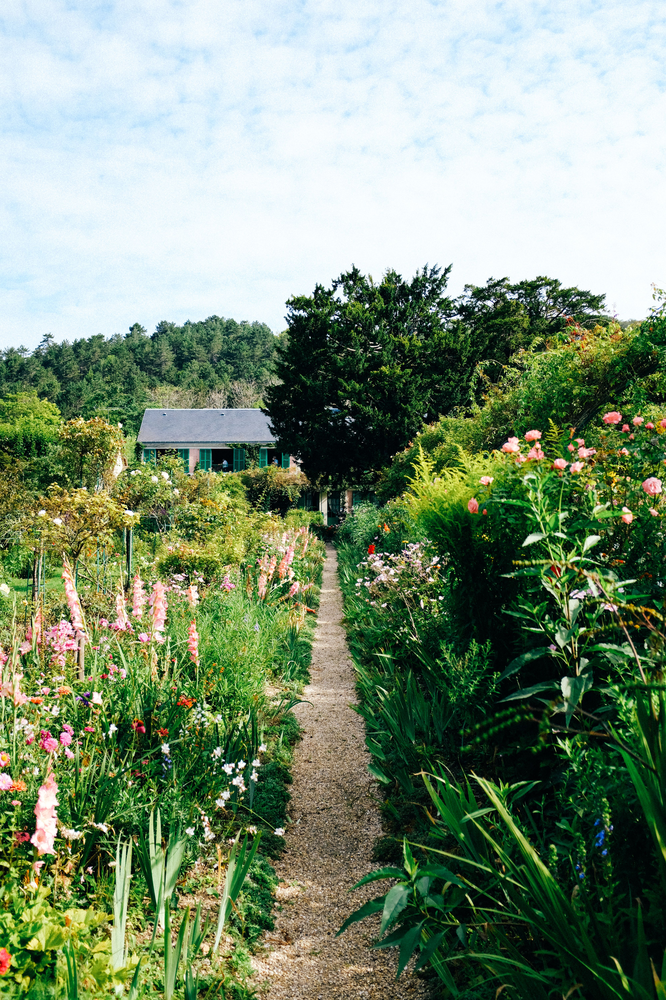

Welcome to Dandelion-Rose, a place where simple living, practical skills, and the beauty of nature come together.
I believe there is something deeply satisfying about creating with our hands, growing something from the earth, and learning the everyday skills that help us live more thoughtfully and independently.
Whether it's planting a garden, discovering the usefulness of herbs, sewing something beautiful, preparing wholesome food, or bringing natural materials into our homes, these simple activities can enrich our lives in meaningful ways.
Dandelion-Rose was born from a desire to share knowledge, encourage creativity, and help others rediscover the beauty of doing things for themselves.
Here, you'll find practical ideas, helpful resources, inspiration from nature, and encouragement to try something new. You don't need a perfect garden, a beautiful farmhouse, or years of experience to begin. Just a little curiosity and a willingness to learn.
My hope is that Dandelion-Rose becomes a place where you feel welcome, inspired, and empowered to create a life filled with natural beauty, useful skills, and simple joys.
I'm so glad you're here.
Let's grow, learn, and create something beautiful together.